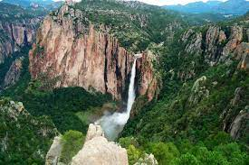
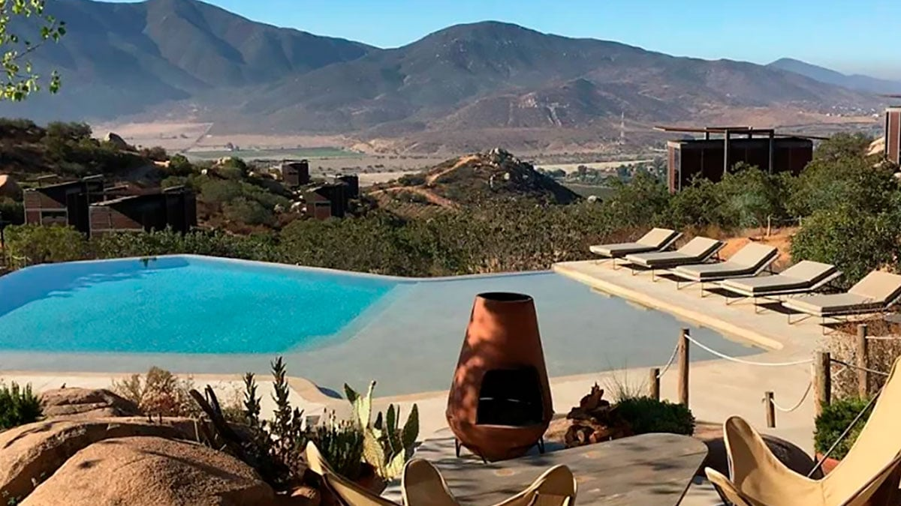

Barrancas del Cobre, Chihuahua
Las Barrancas del Cobre o el Cañón del Cobre se denomina al sistema conformado por siete barrancas. Localizado en la Sierra Tarahumara en el suroeste del estado mexicano de Chihuahua en México. El sistema de cañones es cuatro veces más grande en extensión (60 mil km²) y casi dos veces mayor en profundidad que el Gran Cañón de Colorado en Arizona, en los Estados Unidos de América. Es hogar de los indígenas Rarámuris o Tarahumaras. Las Barrancas del Cobre (como son llamadas localmente) son atravesadas por la ruta de tren Chihuahua al Pacífico, conocido como "el Chepe". En el tramo Divisadero-Los Mochis, el tren se interna en la montaña para atravesar la agreste geografía, pasa junto a precipitosos acantilados, cruza 86 impresionantes túneles cortos y largos, y 37 espectaculares puentes que libran caudalosos ríos. Este es un importante sistema de transporte y un atractivo turístico. Hoy puede llegarse por carretera desde la ciudad de Chihuahua, aproximadamente en cinco horas, y penetrar en las barrancas por caminos rurales. Sobrevolarlas en helicóptero ofrece una espectacular vista aérea.
Huasteca Potosina, San Luis Potosí

La Huasteca es un parque de diversiones natural, perfecto para los que amamos la aventura. Si te gusta bucear, aquí puedes hacerlo en la aguas cristalinas de la laguna de la Media Luna o hacer descenso por las aguas turquesas del río Tampaón y visitar la espectacular cascada de Tamul. Incluso puedes hacer base jumping en el Sótano de las Golondrinas, un abismo de más de 300 metros de profundidad. Cuando el cuerpo ya no aguante, vete a visitar Las Pozas en Xilitla, un jardín en la selva lleno de esculturas fantásticas creadas por el artista inglés Edward James. La región Huasteca es una región en México que comprende el norte de Veracruz, el sur de Tamaulipas, el sureste de San Luis Potosí, el norte del Puebla, el este de Hidalgo y, en mucha menor medida, comprende algunas zonas de los estados de Querétaro y de Guanajuato.
Valle de Guadalupe o Querétaro
calle de Guadalupe es un pueblo en Querétaro, México. Se encuentra ubicado en el municipio de Landa de Matamoros. Tiene 834 habitantes, y se encuentra a 1620 metros sobre el nivel del mar. La entrada a los viñedos no tiene costo. Catas en los viñedos: desde $50 hasta $270 pesos aproximadamente. La cultura del vino en México ha ido creciendo y tiene como epicentro el Valle de Guadalupe, cerca de Ensenada. Ahí se producen las etiquetas de mayor renombre en el país: L.A. Cetto, Pedro Domecq y Monte Xanic. Si Baja California te queda lejos, Querétaro también tiene una importante región vinícola en Ezequiel Montes, cerca de Tequisquiapan. Ahí puedes visitar casas como La Azteca, Casa Freixenet y la Redonda.